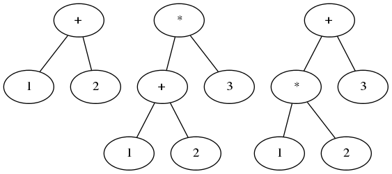

qlang[1]是用Go实现的一套基于虚拟机实现的动态语言,这里主要分解一下虚拟机的实现如何嵌入到解释器当中的.
我们用tpl定义了一套语法,类似于yacc的语法,首先是运算优先级.
*代表匹配至少0个,/表示回调动作,|表示或,这是语法的第一部分,属于基本表达式:
1
2
3
4
5
6
7
8
9
10
11
12
| term1 = factor *('*' factor/mul | '/' factor/quo | '%' factor/mod)
term2 = term1 *('+' term1/add | '-' term1/sub)
term31 = term2 *('<' term2/lt | '>' term2/gt | "==" term2/eq | "<=" term2/le | ">=" term2/ge | "!=" term2/ne)
term3 = term31 *("<-" term31/chin)
term4 = term3 *("&&"/_mute term3/_code/_unmute/and)
expr = term4 *("||"/_mute term4/_code/_unmute/or)
|
所以term1表示乘性运算,相似的term2表示加性运算,term3表示逻辑运算,term4表示与,expr表示表达式.
这里有一个特点就是优先级越高的运算在语法上写在了越前面,这是有原因的.
由上向下的递归推导可以看做是把输入的记号流转化成一颗语法树,从根节点按先序遍历进行.所以对应的也是寻找一个最左推导的过程.
递归方式的遍历也是一种实现,比如说如果我要匹配1+2那么就会构建一颗树形结构如下图的第一个.但是如果要匹配1+2*3这样的表达式就有可能出现问题,既可以是图中的第二种情况也可以是第三种情况.这里就关系到优先级的问题.因为递归向下的解析过程是深度优先的也就是意味着如果最先选择匹配,就能先形成语法结构,比如说,当输入是1+2*3时,如果先匹配加法,那么前三个token就是1+2就会构成一个结点,之后3就只能作为*的右边的因数加入到语法树中,但是如果乘法在语法顺序中靠前,那么匹配到1+的时候,就会去匹配term1这个语法,然后term1就会把乘法匹配完,这样就能构成下图中第三个语法树.这种优先级可以推而广之,同级优先的运算作为一个语法,高优先级的语法排在较前即可.

下面语句的部分:
1
2
3
4
5
6
7
8
9
10
11
12
13
14
15
16
17
18
19
20
21
22
23
24
25
26
27
28
29
30
31
32
33
34
35
36
37
38
39
| sexpr = expr (
'='/tovar! expr/assign |
','/tovar! expr/tovar % ','/ARITY '=' expr % ','/ARITY /massign |
"++"/tovar/inc | "--"/tovar/dec |
"+="/tovar! expr/adda | "-="/tovar! expr/suba |
"*="/tovar! expr/mula | "/="/tovar! expr/quoa | "%="/tovar! expr/moda | 1/pop)
s = "if"/_mute! expr/_code body *("elif" expr/_code body)/_ARITY ?("else" body)/_ARITY/_unmute/if |
"switch"/_mute! ?(~'{' expr)/_code '{' swbody '}'/_unmute/switch |
"for"/_mute/_urange! fhead body/_unmute/for |
"return"! expr %= ','/ARITY /return |
"break" /brk |
"continue" /cont |
"include"! STRING/include |
"import"! (STRING ?("as" IDENT/name)/ARITY)/import |
"export"! IDENT/name % ','/ARITY /export |
"defer"/_mute! expr/_code/_unmute/defer |
"go"/_mute! expr/_code/_unmute/go |
sexpr
doc = ?s *(';' ?s)
body = '{' doc/_code '}'
fhead = (~'{' s)/_code %= ';'/_ARITY
frange = ?(IDENT/name % ','/ARITY '=')/ARITY "range" expr
swbody = *("case"! expr/_code ':' doc/_code)/_ARITY ?("default"! ':' doc/_code)/_ARITY
fnbody = '(' IDENT/name %= ','/ARITY ?"..."/ARITY ')' '{'/_mute doc/_code '}'/_unmute
afn = '{'/_mute doc/_code '}'/_unmute/afn
clsname = '(' IDENT/ref ')' | IDENT/ref
newargs = ?('(' expr %= ','/ARITY ')')/ARITY
|
语句主要支持的是赋值表达式,if语句,switch语句,for语句,return语句,break语句,continue语句,include语句,import语句,export语句,defer语句,go语句和单表达式构成的语句.
if语句类似于if expr body elif expr else body,
switch语句类似于switch expr { swbody },swbody的定义又是类似于case expr: body default: body的形式.
for语句类似于for stmt;stmt;stmt body的形式.
retur语句比较简答,对应的是return expr.
break,continue语句只有continue和break. include,import语句则是include STRING和import STRING的形式. defer语句是defer expr的形式. go语句是go expr`的形式,这里的go语句就是起一个routine进行执行.
从这里可以说一下这门语言的设计,类似于lua从简实现.因为继承了Go通道的特性所以语法中出现了类似<-的语法,并且支持类和成员函数.支持复合类型比如说slice,map和chan.
接着是单一元素的定义.
1
2
3
4
5
6
7
8
9
10
11
12
13
14
15
16
17
18
19
20
21
22
23
24
| classb = "fn"! IDENT/name fnbody ?';'/mfn
atom =
'(' expr %= ','/ARITY ?"..."/ARITY ?',' ')'/call |
'.' (IDENT|"class"|"new"|"recover"|"main")/mref |
'[' ?expr/ARITY ?':'/ARITY ?expr/ARITY ']'/index
factor =
INT/pushi |
FLOAT/pushf |
STRING/pushs |
CHAR/pushc |
(IDENT/ref | '('! expr ')' |
"fn"! (~'{' fnbody/fn | afn) | '[' expr %= ','/ARITY ?',' ']'/slice) *atom |
"new"! clsname newargs /new |
"range"! expr/_range |
"class"! '{' *classb/ARITY '}'/class |
"recover"! '(' ')'/recover |
"main"! afn |
'{'! (expr ':' expr) %= ','/ARITY ?',' '}'/map |
'!' factor/not |
'-' factor/neg |
"<-" factor/chout |
'+' factor
|
atom是个比较常见的定义,作为一个变量的atom,就是类似于fn(expr),var.selector或者indent[index]构成atom定义,作为元素的一部分.
整数(INT),浮点数(FLOAT),字符串(STRING),字符(CHAR),组合atom的元素(INDENT atom,fn{}atom,[expr,expr…]atom)等都可能是一个元素.
支持语法级别的new返回的对象,支持range,从panic中recover也可能是一个返回值,以及一些单操作符可以表达的字符串.
以上是整个语法的定义.qlang运行的环境是自行编写的虚拟机环境,实现一个虚拟机主要是要实现各种字节码的实现,还有对应的系统调用.
但是目前的实现没有定义中间状态的字节码,而是以一个库的形式,用接口的形式作为字节码执行的接口.
任何字节码的定义都要满足这样的接口,第一个参数是当前的栈,第二个参数是执行的上下文.
1
2
3
| type Instr interface {
Exec(stk *Stack, ctx *Context)
}
|
对应的实现者为Class,iAnonymFn(匿名函数),iAs,
iAssign(赋值),iCall(调用),iDefer,isExport`,
iForRange,iFunc,iGo,iMacro,iMemberRef,
iModule,iMultiAssign,iMultiAssingFromSlice,
iOp1Assign,iOp3,iOpAssign,iPush,iRef,
iRem,iUnSet,iAnd,iCallFn,iCallFnv,
iCase,iGo,iChanIn,iClear,iJmp,
iJmpIfFalse,iNew,iOr,iPop,iPopEx,
iRecover,iReturn,等等这些字节码都是通过构造函数变作为Insrt接口返回的.
其实编程语言的虚拟机说白了就是一种提供字节码的运行环境,比如我定义add x1,x2和sub x1,x2两条指令作为我的虚拟机的集合,那么我的虚拟寄字节码就支持加法和乘法,也就可以完成一个简易计算器的算式到字节码的转化,再把得到的字节码按照我们的需要进行转换.
比如LLVM[2]就是把自己定义的一套字节码(也就是类似于平台无关的虚拟汇编,其实这种汇编要稍微好用一点点,因为里面的寄存器是无限多个的,不需要自己考虑寄存器不够的情况),然后把这些字节码转化成平台相关的汇编,最后变成二进制文件.所以实现一套编程语言虚拟机就是要定义一套字节码的集合和对应的实现方式.
这里我们用Go实现虚拟机是通过Go来运行的,所以没有静态语言的性质,只是跑在Go的运行时上的虚拟机.这里我们举个例子看一下具体的实现.
现在以switch语法为例说一下运行流程
在C转汇编的过程中,switch case是通过跳转表来实现的,比如下面的C代码
1
2
3
4
5
6
7
8
9
10
11
12
13
14
15
16
17
18
19
20
21
| #include <stdio.h>
int f(int x)
{
switch(x)
{
case 1:
printf("1");
break;
case 2:
printf("2");
break;
default:
printf("default");
}
}
int main()
{
f(3);
}
|
转成汇编的话就是如下代码,f为switch case的部分的实现.
1
2
3
4
5
6
7
8
9
10
11
12
13
14
15
16
17
18
19
20
21
22
23
24
25
26
27
28
29
30
31
32
33
34
35
36
37
38
39
40
41
42
43
44
45
46
47
| .file "main.c"
.section .rodata
.LC0:
.string "default"
.text
.globl f
.type f, @function
f:
pushq %rbp // 保存栈base指针
movq %rsp, %rbp // 移动栈指针到rbp
subq $16, %rsp // 因为leaf function,可以开辟red zone[3] 128个字节
movl %edi, -4(%rbp) // 栈指针开始第4个字节,也就是第一个参数,0(%rbp)是callee保留的rbp.
movl -4(%rbp), %eax // 移动到eax中
cmpl $1, %eax //和1比较跳到L3
je .L3
cmpl $2, %eax //和2比较跳到L4
je .L4
jmp .L7 // default跳到L7
.L3:
movl $49, %edi // 放入参数'1'调用putchar,这里只打印一个字符,被优化成了putchar.
call putchar
jmp .L6
.L4:
movl $50, %edi // 放入参数'2'
call putchar
jmp .L6
.L7:
movl $.LC0, %edi // 让如.LC0,也就是字符串"default"的地址放入edi作为printf的参数
movl $0, %eax
call printf
.L6:
leave
ret
.size f, .-f
.globl main
.type main, @function
main:
pushq %rbp
movq %rsp, %rbp
movl $3, %edi
call f
popq %rbp
ret
.size main, .-main
.ident "GCC: (Ubuntu 4.8.4-2ubuntu1~14.04.1) 4.8.4"
.section .note.GNU-stack,"",@progbits
|
从汇编可以看出switch case其实本身其实是可以通过goto实现的,switch case只是goto的一个高级封装的实现技巧而已.如何放到虚拟机中
其实就是提供类似的goto机制来满足跳转的需求.
switch解析的时候首先注册了$switch的回调函数,如果匹配了"switch"/_mute! ?(~'{' expr)/_code '{' swbody '}'/_unmute/switch就会调用Compiler.Switch函数进行处理.
_mute会禁止回调函数的运行,除了_开头的回调函数,_unmute则是解开禁止.
_code的作用是把匹配到的语法记号流(tokens []tpl.Token)入栈.
swith boyd 是按照如下定义的:
swbody = *("case"! expr/_code ':' doc/_code)/_ARITY ?("default"! ':' doc/_code)/_ARITY
_ARITY获取的是语法匹配的次数,分别记录了case和default匹配的次数,case可以匹配*次,default可以匹配?次.
然后可以看下Switch如何处理的.
1
2
3
4
5
6
7
8
9
10
11
12
13
14
15
16
17
18
19
20
21
22
23
24
25
26
27
28
29
30
31
32
33
34
35
36
37
38
39
40
41
42
43
44
45
46
47
48
49
50
51
52
53
54
55
56
57
58
59
60
61
62
63
64
65
66
67
68
69
70
71
72
73
| func (p *Compiler) Switch(e interpreter.Engine) {
var defaultCode interface{}
// 之前push了一个 ? 的匹配次数, 如果是1那么就有default的代码, 所以把defaultCode pop出来.
defaultArity := p.popArity()
if defaultArity == 1 {
defaultCode, _ = p.gstk.Pop()
}
// 获取case的匹配次数
caseArity := p.popArity()
// case 中有个expression,case:后面有一个statment,所以乘2
casebr := p.gstk.PopNArgs(caseArity << 1) // 2 * caseArity
// 这switch:后面跟着的expression的代码取出
switchCode, _ := p.gstk.Pop()
// 保存老的块上下文
old := p.bctx
p.bctx = blockCtx{}
// switchCode有两种 , 一种是 switch , 一种是 switch expr.
// 这里处理的是switch {}的形式,每个case中都是条件表达式,就变成了if语句.
if switchCode == nil {
// 执行case branch,和default branch
p.doIf(e, casebr, defaultCode, caseArity)
p.bctx.MergeSw(&old, p.code.Len())
return
}
// 转换switchCode
// reserved2 是一组空的指令,用于最后填充跳转指令跳到switch body的末尾.
reserved2 := make([]exec.ReservedInstr, caseArity)
if err := e.EvalCode(p, "expr", switchCode); err != nil {
panic(err)
}
// 解析switchCode完毕,添加一行代码
p.CodeLine(switchCode)
for i := 0; i < caseArity; i++ {
caseCode := casebr[i<<1]
// 解析表达式
if err := e.EvalCode(p, "expr", caseCode); err != nil {
panic(err)
}
// 记录解析过的一行代码
p.CodeLine(caseCode)
// 保留指令一行空指令留待插入 case的跳转指令
reserved1 := p.code.Reserve()
bodyCode := casebr[(i<<1)+1]
// 解析块代码
bctx := evalDocCode(e, p, bodyCode)
// 把当前作用域中break,continue指令加入到p.bctx中
// 等最后到解析末尾再把跳转距离计算出来
bctx.MergeTo(&p.bctx)
// 把当前位置留空.
// 解析到了case :{}结尾作为跳转到结尾的指令的插入位置.
reserved2[i] = p.code.Reserve()
// 把reserved1保留的位置插入跳转到reserved2的保留的地址的地方.
// 相当于 Case delta,如果case 成功那么就跳到body的末尾,reserved2[i]
reserved1.Set(exec.Case(reserved2[i].Delta(reserved1)))
}
// 类似的解析default的case
p.code.Block(exec.Default)
bctx := evalDocCode(e, p, defaultCode)
bctx.MergeTo(&p.bctx)
end := p.code.Len()
for i := 0; i < caseArity; i++ {
// 设置跳转到末尾的指令
reserved2[i].Set(exec.Jmp(end - reserved2[i].Next()))
}
// 设置break指令的跳转地址.
// 并把旧bctx换回来,也就是说break,continue
// 跳转范围就终止在 switch 的作用域内.
p.bctx.MergeSw(&old, end)
}
|
比如下面的代码进行转化的话
1
2
3
4
5
6
7
8
9
10
11
12
13
| x=1
switch(x){
case 1:
x=4
break
case 2:
x=2
break
case 3:
x=3
break
}
|
就跳到执行块的末尾,最后的翻译结果就是下面这样
1
2
3
4
5
6
7
8
9
10
11
12
13
14
15
16
17
18
19
20
21
22
23
24
25
26
27
| ==> 0000: Var &{x} // 变量x
==> 0001: Push &{1} // 压入1
==> 0002: AssignEx 0 // x=1
==> 0003: Ref &{x} // 引用x
==> 0004: Push &{1} // 压入1
==> 0005: Case 5 // case是自己定义的字节码,等于pop 1 再和当前栈顶的x比较,如果成功向下跳转5
==> 0006: Var &{x} // 引用x
==> 0007: Push &{4} // 压入4
==> 0008: AssignEx 0 // x=4
==> 0009: Jmp 16 // break 跳到结尾
==> 0010: Jmp 15 // case 不会继续执行,也是跳到结尾
==> 0011: Push &{2} // 后面是类似的
==> 0012: Case 5
==> 0013: Var &{x}
==> 0014: Push &{2}
==> 0015: AssignEx 0
==> 0016: Jmp 9
==> 0017: Jmp 8
==> 0018: Push &{3}
==> 0019: Case 5
==> 0020: Var &{x}
==> 0021: Push &{3}
==> 0022: AssignEx 0
==> 0023: Jmp 2
==> 0024: Jmp 1
==> 0025: Pop 0
|
比起汇编,我们定义的字节码稍微高级一点不需要构造跳转表，而是用Case指令替代,和栈顶的值比较,如果为true就顺序执行,不然就会跳转
相对距离的位置,到这里为止,我们的转换就结束了.
最后总结一下,现代编译器的实现已经非常方便了,前端有lex,yacc,后端有llvm,比如object-c和clang,以及rust的后端都是llvm,所以llvm还是很靠谱的,而前端手写或者用工具生成各有利弊,但是并不是什么决定因素.
而这里实现的qlang主要是优势是短小精悍无依赖,全部前后端自行实现,可以作为Golang的项目的嵌入脚本语言,类似于lua.
[1] https://github.com/qiniu/qlang
[2] http://llvm.org/
[3] http://eli.thegreenplace.net/2011/09/06/stack-frame-layout-on-x86-64/